|
The Color node lists colors to use for the various parts of a geometric shape, providing the value of the color field.
Color indexes select colors to use at each vertex.
Colors override any accompanying Material node.
The colorPerVertex field selects color per line/face/grid square or else color per coordinate.
These X3D scenes are adapted directly from the
original VRML 2.0 Sourcebook chapter examples.
Also available:
Introduction to VRML97 SIGGRAPH98 course notes.
|

![[1] Figure16.1ColoredPointSetScatterPlot.x3d - View points](_viewpoints/Figure16.1ColoredPointSetScatterPlot.x3d._VP_View_points.png){kind=link}
![[2] Figure16.1ColoredPointSetScatterPlot.x3d - (default X3D view)](_viewpoints/Figure16.1ColoredPointSetScatterPlot.x3d._VP_Default_viewpoint.png){kind=link}
![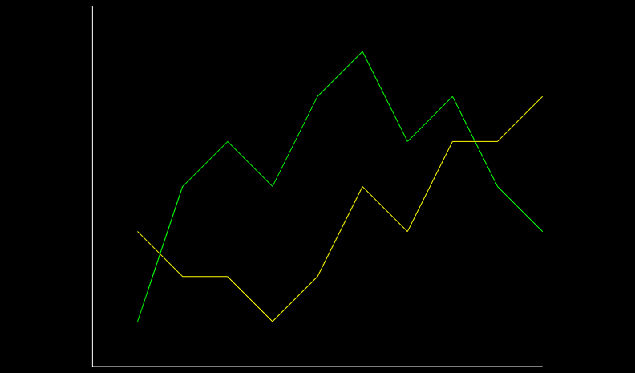[3] Figure16.2ColoredLinesPlot.x3d - View points](_viewpoints/Figure16.2ColoredLinesPlot.x3d._VP_View_points.png){kind=link}
![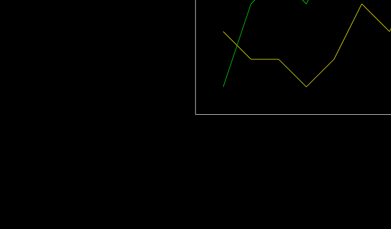[4] Figure16.2ColoredLinesPlot.x3d - (default X3D view from 0 0 10)](_viewpoints/Figure16.2ColoredLinesPlot.x3d._VP_Default_viewpoint.png){kind=link}
![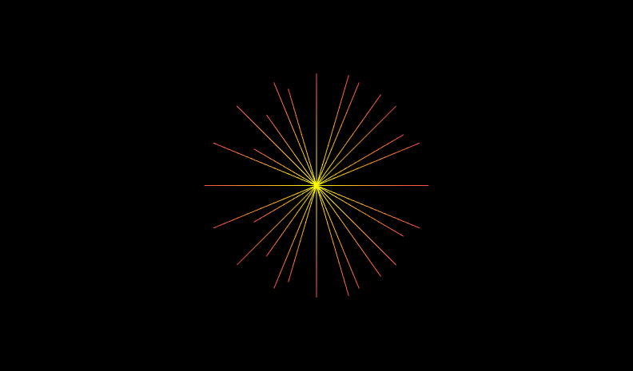[5] Figure16.3ColoredLinesStarburst.x3d - Starburst lines](_viewpoints/Figure16.3ColoredLinesStarburst.x3d._VP_Starburst_lines.png){kind=link}
![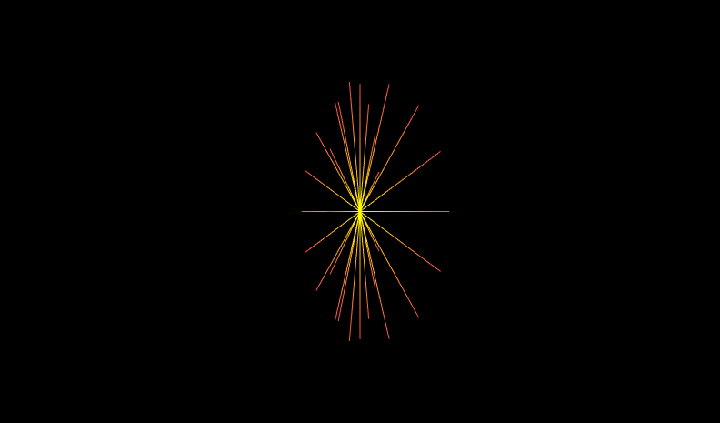[6] Figure16.3ColoredLinesStarburst.x3d - Spinning viewpoint](_viewpoints/Figure16.3ColoredLinesStarburst.x3d._VP_Spinning_viewpoint.png){kind=link}
![[7] Figure16.3ColoredLinesStarburst.x3d - (default X3D view from 0 0 10)](_viewpoints/Figure16.3ColoredLinesStarburst.x3d._VP_Default_viewpoint.png){kind=link}
![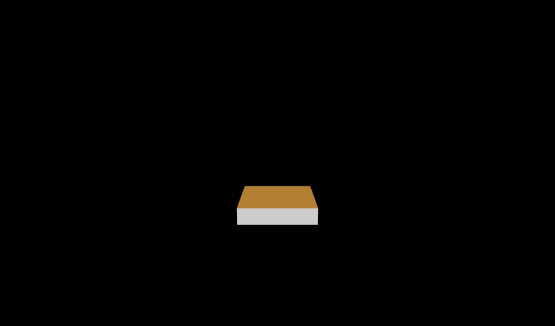[11] Figure16.4ColoredBookFaces.x3d - Book](_viewpoints/Figure16.4ColoredBookFaces.x3d._VP_Book.png){kind=link}
![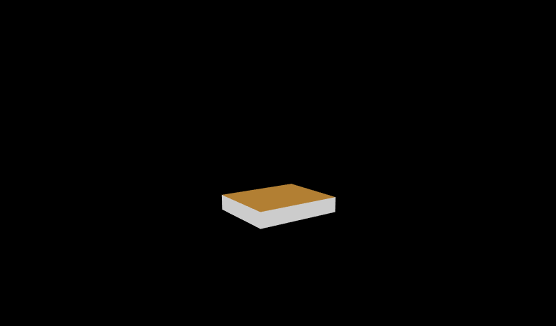[12] Figure16.4ColoredBookFaces.x3d - Spinning viewpoint](_viewpoints/Figure16.4ColoredBookFaces.x3d._VP_Spinning_viewpoint.png){kind=link}
![[13] Figure16.4ColoredBookFaces.x3d - (default X3D view from 0 0 10)](_viewpoints/Figure16.4ColoredBookFaces.x3d._VP_Default_viewpoint.png){kind=link}
![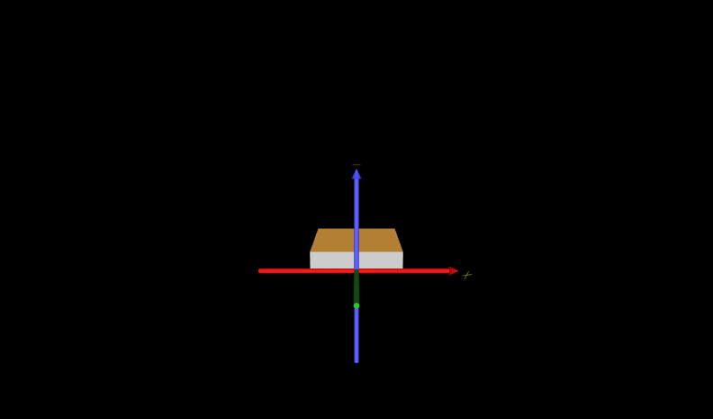[14] Figure16.4ColoredBookFacesWithAxes.x3d - Book](_viewpoints/Figure16.4ColoredBookFacesWithAxes.x3d._VP_Book.png){kind=link}
![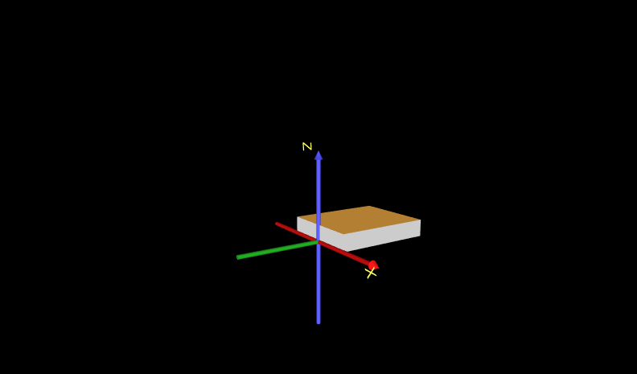[15] Figure16.4ColoredBookFacesWithAxes.x3d - Spinning viewpoint](_viewpoints/Figure16.4ColoredBookFacesWithAxes.x3d._VP_Spinning_viewpoint.png){kind=link}
![[16] Figure16.4ColoredBookFacesWithAxes.x3d - (default X3D view)](_viewpoints/Figure16.4ColoredBookFacesWithAxes.x3d._VP_Default_viewpoint.png){kind=link}
![[17] Figure16.5LogFireColoredFaces.x3d - Log fire](_viewpoints/Figure16.5LogFireColoredFaces.x3d._VP_Log_fire.png){kind=link}
![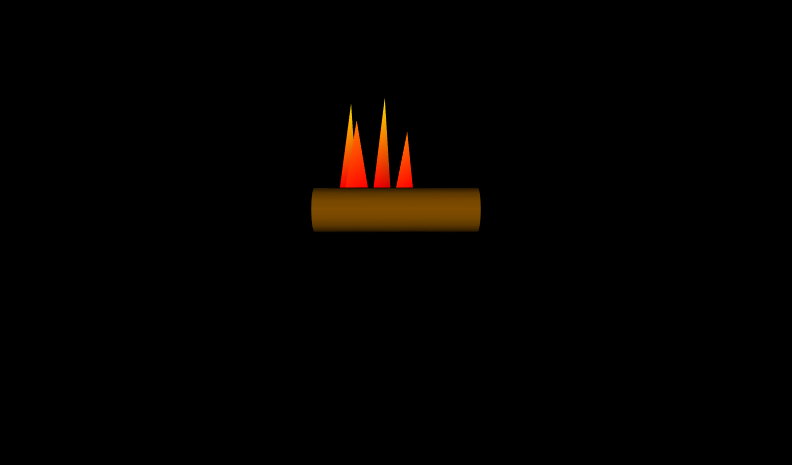[18] Figure16.5LogFireColoredFaces.x3d - (default X3D view from 0 0 10)](_viewpoints/Figure16.5LogFireColoredFaces.x3d._VP_Default_viewpoint.png){kind=link}
![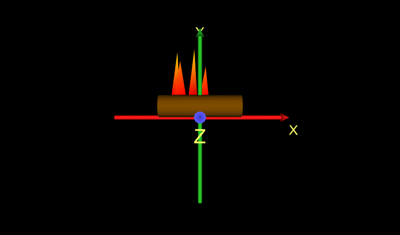[19] Figure16.5LogFireColoredFacesWithAxes.x3d - Log fire](_viewpoints/Figure16.5LogFireColoredFacesWithAxes.x3d._VP_Log_fire.png){kind=link}
![[20] Figure16.5LogFireColoredFacesWithAxes.x3d - (default X3D view)](_viewpoints/Figure16.5LogFireColoredFacesWithAxes.x3d._VP_Default_viewpoint.png){kind=link}
![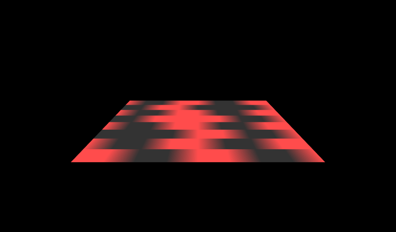[21] Figure16.6ColoredElevationGridCheckerboard.x3d - Checkerboard](_viewpoints/Figure16.6ColoredElevationGridCheckerboard.x3d._VP_Checkerboard.png){kind=link}
![[23] Figure16.7VertexColoredElevationGridMountain.x3d - Per-vertex colored mountain](_viewpoints/Figure16.7VertexColoredElevationGridMountain.x3d._VP_Per-vertex_colored_mountain.png){kind=link}
![[24] Figure16.7VertexColoredElevationGridMountain.x3d - (default X3D view)](_viewpoints/Figure16.7VertexColoredElevationGridMountain.x3d._VP_Default_viewpoint.png){kind=link}